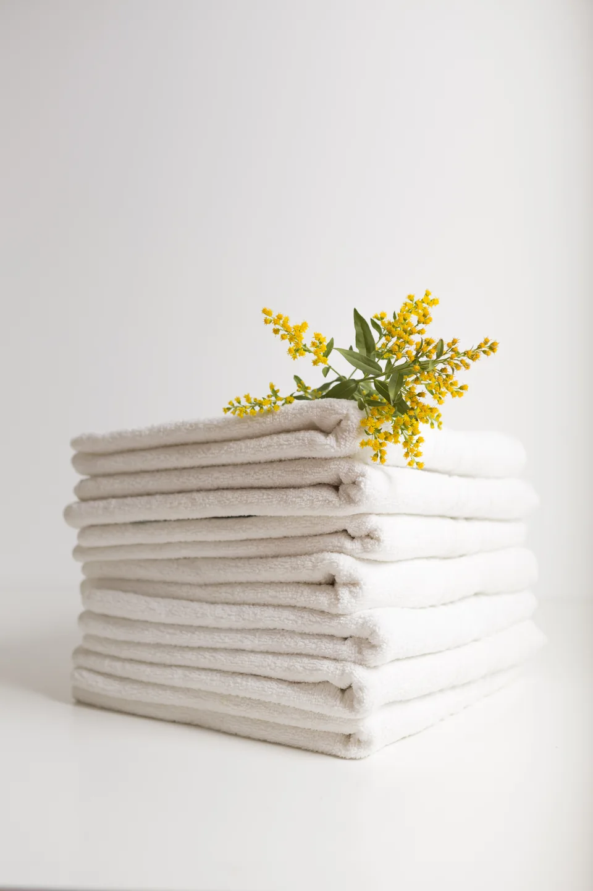

Thoughtful home care · Northern New Mexico
Enjoy your time away.
We’ll care for home.
Enjoy peace of mind knowing your home is cared for while you’re away. Reliable property oversight, vendor coordination, and personalized home preparation, tailored to your needs.
Book with us
Welcome to Enchanted Circle
The comfort of knowing
your home is cared for.
Enchanted Circle Home Care & Concierge provides reliable, hands-on care for homes throughout Northern New Mexico. We get to know your property, your routines, and the little things that matter to you, so you can spend less time managing your home and more time enjoying it.
Explore our servicesRecurring residential cleaning
Weekly, biweekly, or monthly upkeep. A dependable routine.
02Vacation & second-home care
Ready for arrivals, departures, and seasonal stays.
03Regular home check-ins
Trusted local eyes on the property between stays.
04Detailed first clean
A thoughtful foundation for ongoing care.
Care you can feel the moment
you walk through the door.

It matters who you
trust your home with.
For Hannah, this work has always been personal. What began with caring for homes throughout Taos has grown naturally over the years, often through the trust and referrals of the people she’s worked with along the way.
Hannah and Devin have called Taos home for nearly a decade. Today, Hannah and her small, trained team provide cleaning, home care, and concierge services, bringing the same personal attention and dependability to every home they care for.
Get to know usLet’s get to know your home
Schedule a consultation
and private walkthrough.
A good relationship starts with a conversation. Tell us a little about your property, and we’ll take it from there.
Property type
& approximate size
Location in the
Enchanted Circle area
Your ideal
service frequency
Full-time, vacation,
or second home